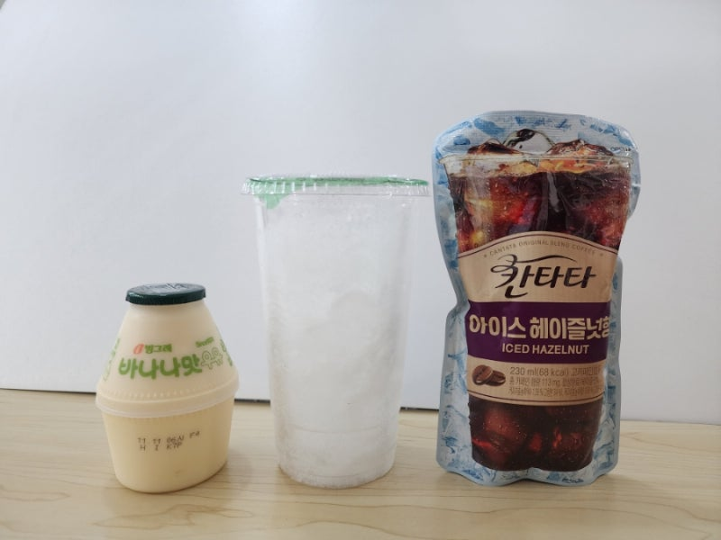

바나나우유 + 아이스 아메리카노
편의점 음료 꿀조합의 정석입니다. 달콤한 바나나우유와 쓴 커피를 섞으면 디저트 음료처럼 변합니다.
살 것 (제품명 참고)
빙그레 바나나맛 우유(또는 저지방/고칼슘 바나나우유) · CU/GS25/세븐일레븐 아이스 아메리카노 또는 캔/병 커피 · 선택: 빨대·컵
만드는 방법
1. 편의점에서 바나나우유와 아이스 아메리카노(또는 아메리카노 캔)를 고릅니다. 우유는 냉장, 커피는 차갑게 고르면 더 맛있습니다.
2. 뚜껑을 열고 커피를 바나나우유에 조금씩 부어 섞습니다. 처음엔 커피를 1/3~1/2만 넣고 맛을 본 뒤 조절하세요.
3. 잘 흔들거나 빨대로 저어 줍니다. 너무 달면 커피를 더 넣고, 쓰다면 우유를 더 남깁니다.
팁
비닐봉지가 없으면 커피잔에 바나나우유를 부어도 됩니다. 칼로리가 걱정되면 저지방 바나나우유를 고르세요.
편의점 음료 꿀조합의 정석입니다. 달콤한 바나나우유와 쓴 커피를 섞으면 디저트 음료처럼 변합니다.
살 것 (제품명 참고)
빙그레 바나나맛 우유(또는 저지방/고칼슘 바나나우유) · CU/GS25/세븐일레븐 아이스 아메리카노 또는 캔/병 커피 · 선택: 빨대·컵
만드는 방법
- 편의점에서 바나나우유와 아이스 아메리카노(또는 아메리카노 캔)를 고릅니다. 우유는 냉장, 커피는 차갑게 고르면 더 맛있습니다.
- 뚜껑을 열고 커피를 바나나우유에 조금씩 부어 섞습니다. 처음엔 커피를 1/3~1/2만 넣고 맛을 본 뒤 조절하세요.
- 잘 흔들거나 빨대로 저어 줍니다. 너무 달면 커피를 더 넣고, 쓰다면 우유를 더 남깁니다.
팁
비닐봉지가 없으면 커피잔에 바나나우유를 부어도 됩니다. 칼로리가 걱정되면 저지방 바나나우유를 고르세요.